Journal Article
A singularity regression kriging for spatial prediction
https://doi.org/10.1080/15481603.2026.2690341Overview
This paper develops singularity regression kriging (SRK) for spatial prediction in heterogeneous environments. SRK derives multi-scale singularity features from environmental covariates, incorporates them into random forest trend estimation, and applies ordinary kriging to the residuals. The model is evaluated through simulations and trace-element mapping of zinc and cobalt in a mineralised region of Western Australia.
Abstract
Accurate spatial prediction remains challenging in heterogeneous environments where environmental variables exhibit nonlinear, multiscale, and non-Gaussian characteristics. Traditional kriging methods rely on simple trend models that cannot adequately capture nonlinear and multiscale spatial structures, leading to degraded prediction performance under complex conditions. This study proposes a singularity regression kriging (SRK) model that explicitly incorporates singularity-based anomaly features derived from environmental covariates into random forest trend estimation, followed by ordinary kriging of the resulting residuals. By computing covariate singularity indices at multiple spatial scales, SRK captures local multiscale heterogeneity without requiring response observations at prediction locations, ensuring robust generalisation under spatial block cross-validation. Simulation experiments demonstrate that SRK consistently improves prediction accuracy relative to ordinary kriging, with particularly significant improvements under skewed and long-tailed distributions. The SRK model is implemented in trace-element mapping of Zn and Co in a mineralised region of Western Australia and evaluated using spatial block cross-validation and parameter sensitivity analysis. Compared with ordinary kriging, regression-based methods, and machine-learning approaches, SRK produces more coherent spatial patterns and reduced prediction uncertainty. These results indicate that explicitly incorporating covariate singularity features into trend estimation enhances both the accuracy and reliability of spatial predictions in heterogeneous environments.
Method Implementation
SRK keeps the regression-kriging decomposition, but changes the trend model by adding singularity information derived from environmental covariates. The singularity indices are calculated from \(X_k\), not from the response \(Z\) and not from random-forest residuals, so they can be evaluated both at sampled locations and at unsampled prediction locations.
-
Construct singularity features from environmental covariates
For each environmental covariate \(X_k(\mathbf{s})\), local covariate intensity is measured within neighbourhoods \(A(\mathbf{s},r)\) across multiple spatial scales. In the paper, this intensity is estimated as the mean absolute covariate value in a square window:
\[ \widehat{C}_k\!\left(A(\mathbf{s},r)\right) = \frac{1}{\left|A(\mathbf{s},r)\right|} \sum_{\mathbf{s}' \in A(\mathbf{s},r)} \left|X_k(\mathbf{s}')\right| \]Repeating this over scales \(r_1 < r_2 < \cdots < r_J\) gives a local log-log relationship:
\[ \log \widehat{C}_k\!\left(A(\mathbf{s},r)\right) = \left(\alpha_k(\mathbf{s}) - 2\right)\log r + c_k(\mathbf{s}) + e_{k,r} \]The singularity index is then estimated as \(\alpha_k(\mathbf{s}) = \hat{\beta}_{1,k}(\mathbf{s}) + 2\). A value near 2 represents a locally uniform field, \(\alpha_k(\mathbf{s}) < 2\) indicates local enrichment, and \(\alpha_k(\mathbf{s}) > 2\) indicates local depletion. In the case study, singularity indices were computed from 2 to 20 km at 2-km intervals. Each scale required at least three valid neighbouring samples, at least two valid scales were required for estimation, and near-constant singularity features were removed using a standard-deviation threshold of 0.5.
-
Build the augmented feature matrix
The original covariates and the retained singularity features are combined into one predictor set. If \(q\) singularity features pass the filtering step, the feature vector at location \(\mathbf{s}\) is:
\[ \mathcal{F}(\mathbf{s}) = \left\{ X_1(\mathbf{s}),\ldots,X_p(\mathbf{s}), \alpha_{k_1}(\mathbf{s}),\ldots,\alpha_{k_q}(\mathbf{s}) \right\} \]This is the central distinction of SRK: the random forest receives both the original environmental variables and their covariate-based multiscale anomaly descriptors.
-
Estimate the nonlinear trend with random forest
A random forest model \(g(\cdot)\) is trained on the augmented feature matrix to estimate the deterministic trend:
\[ \hat{\mu}(\mathbf{s}_i) = g\!\left(\mathcal{F}(\mathbf{s}_i)\right) \]Because the singularity variables describe local multiscale heterogeneity, the RF trend component can absorb more structured variation before kriging is applied. The real-data implementation used a random forest with 500 trees.
-
Calculate residuals at sampled locations
The residual at each observed sample is computed by subtracting the singularity-augmented RF trend from the observed target value:
\[ \varepsilon(\mathbf{s}_i) = Z(\mathbf{s}_i) - \hat{\mu}(\mathbf{s}_i) \]These residuals are expected to be more concentrated around zero and closer to stationarity than residuals from a model using only the original covariates.
-
Interpolate the residuals using ordinary kriging
A variogram is fitted to the residuals, and ordinary kriging estimates the residual component at an unsampled location:
\[ \hat{\varepsilon}(\mathbf{s}_0) = \sum_{i=1}^{n} \lambda_i\,\varepsilon(\mathbf{s}_i), \qquad \sum_{i=1}^{n}\lambda_i = 1 \]In the case study, variogram fitting and residual kriging were implemented with
autoKrigefrom the R packageautomap, using an isotropic ordinary-kriging setup. -
Combine RF trend and kriged residuals
The final prediction is obtained by adding the random-forest trend and the ordinary-kriging residual estimate:
\[ \hat{Z}(\mathbf{s}_0) = \hat{\mu}_{\mathrm{RF+singularity}}(\mathbf{s}_0) + \hat{\varepsilon}_{\mathrm{OK}}(\mathbf{s}_0) \]The kriging variance from the residual interpolation also provides a kriging-based uncertainty measure, \(\delta(\mathbf{s}_0)=\sqrt{\sigma_K^2(\mathbf{s}_0)}\). Model performance in the paper was evaluated with 5-fold spatial block cross-validation using a 15 km block size.
Figures
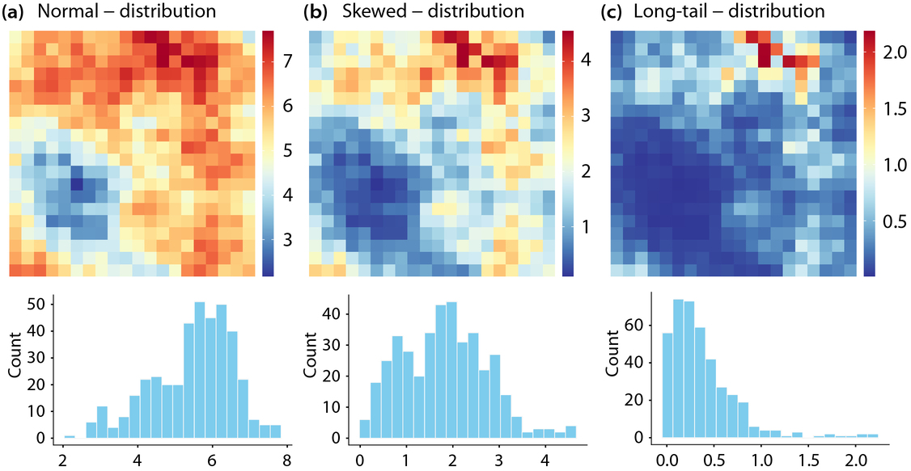
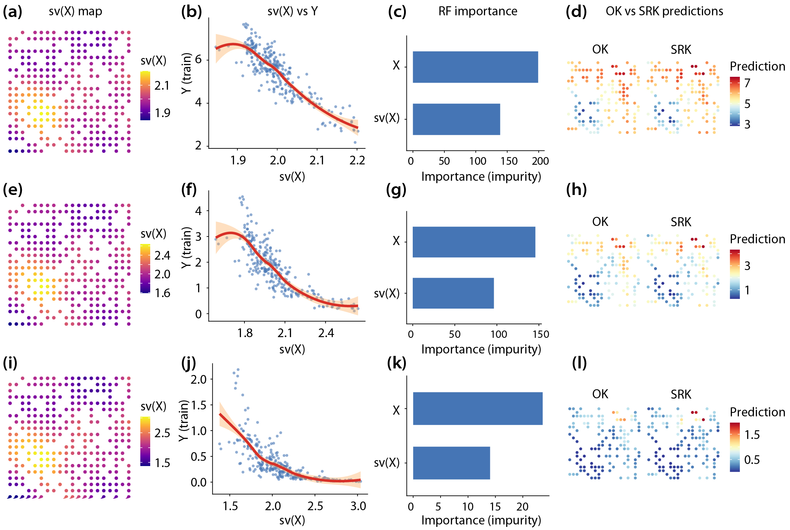
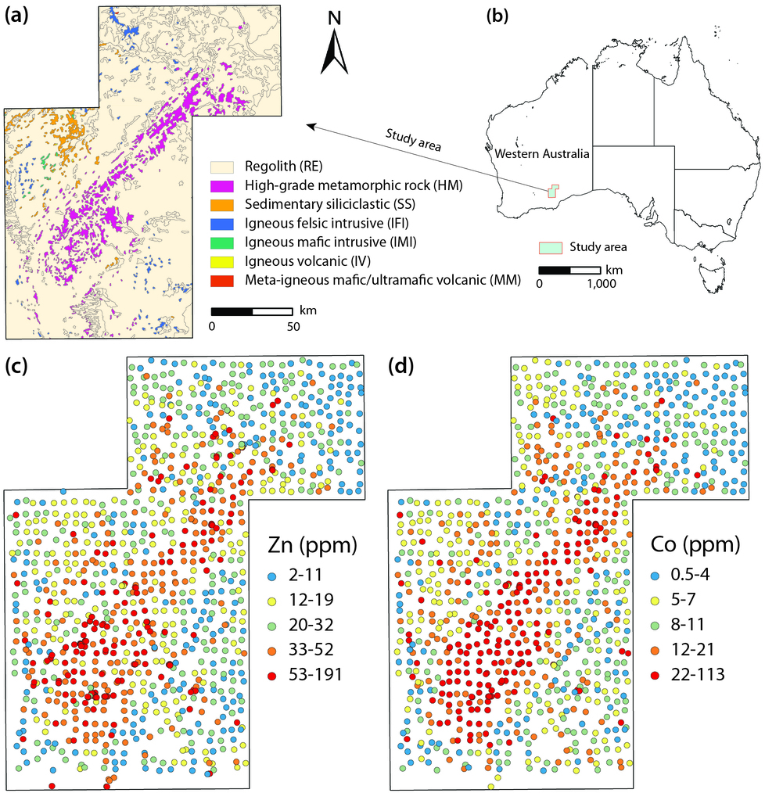
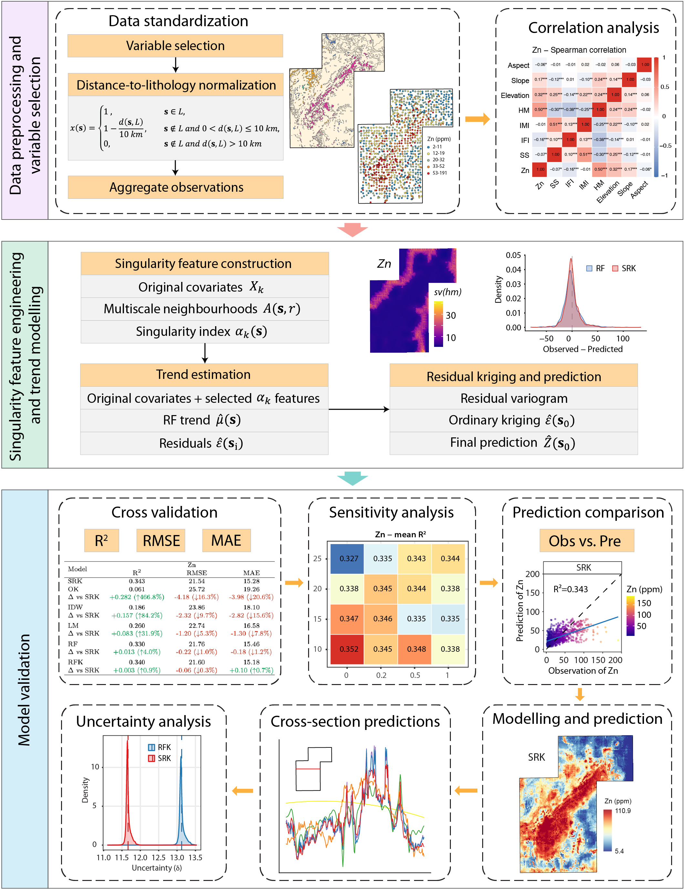
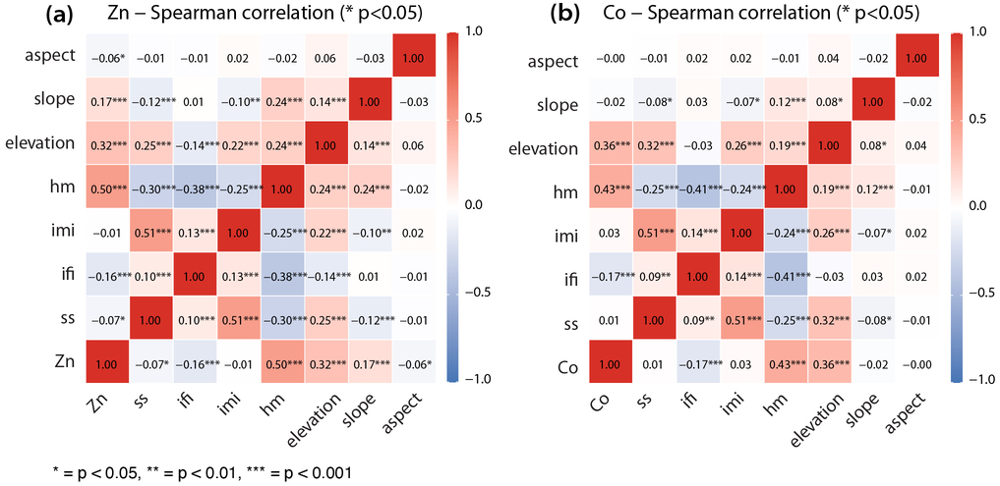
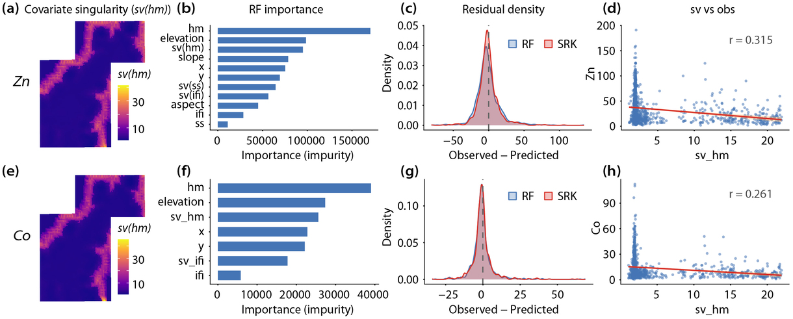
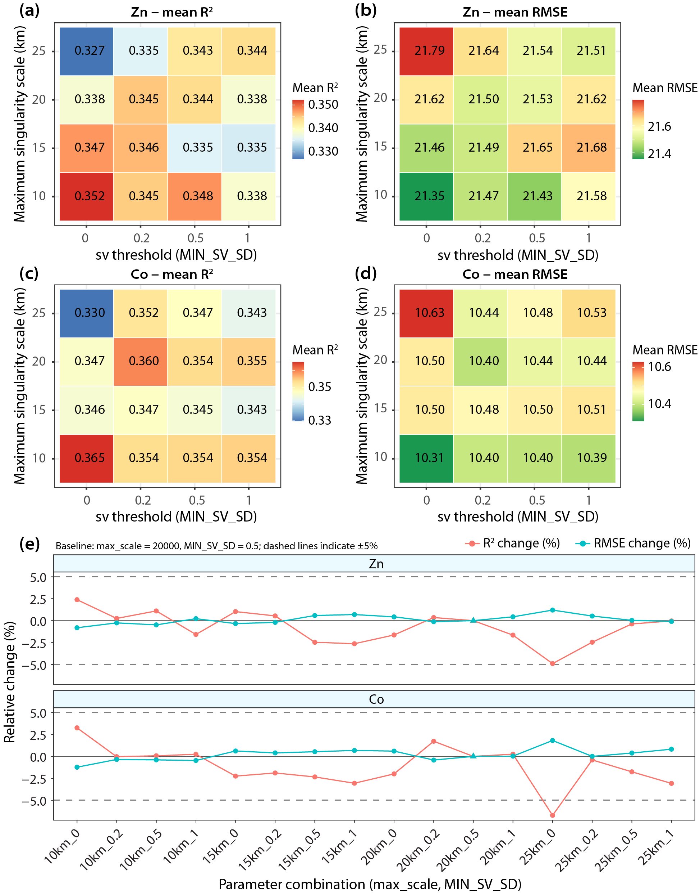
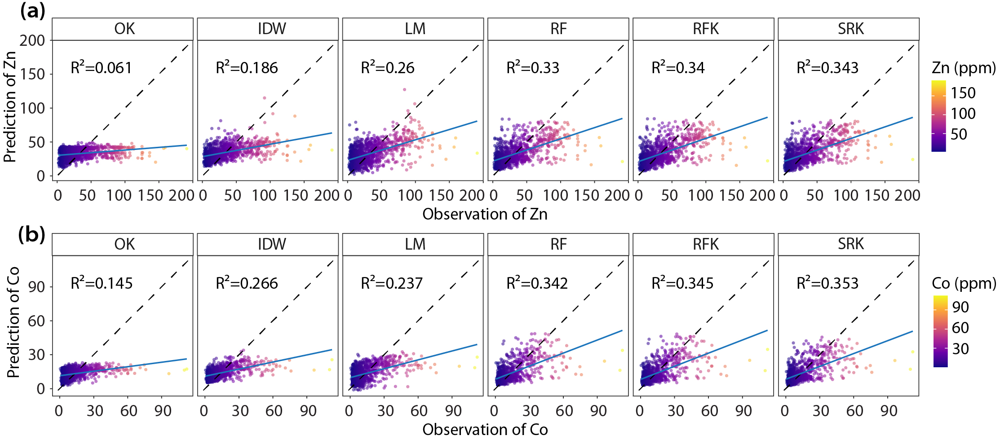
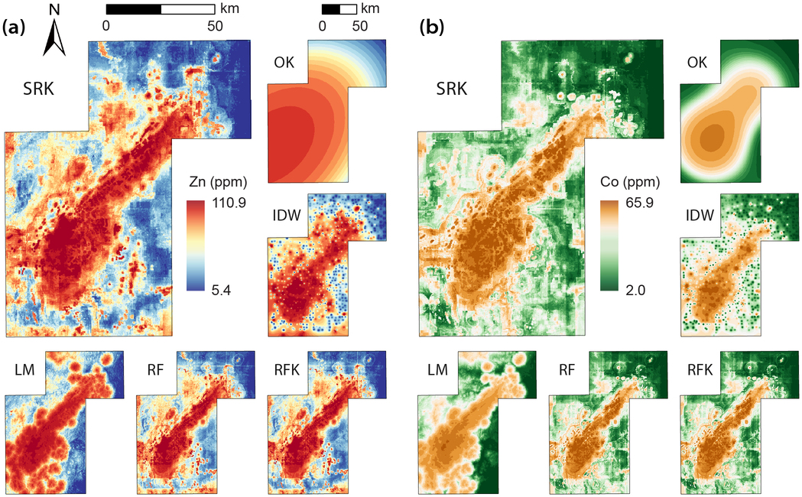
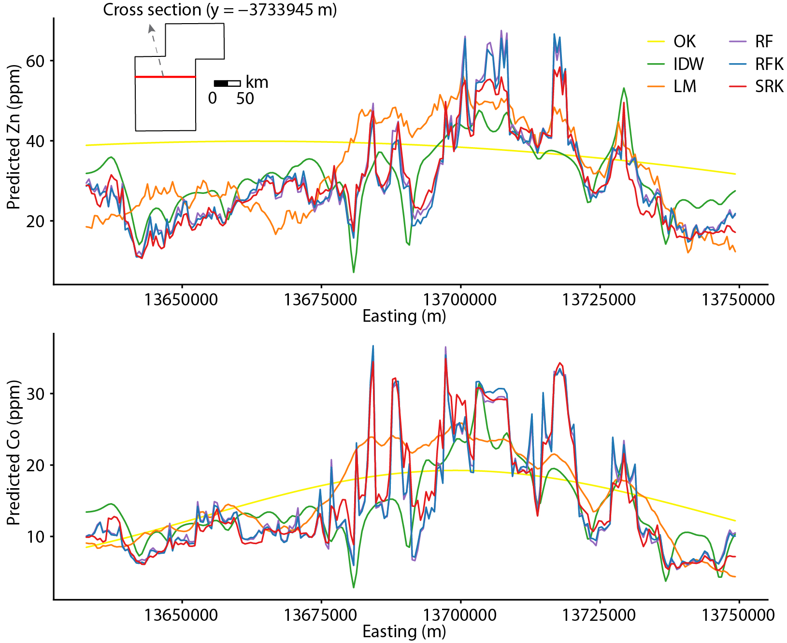
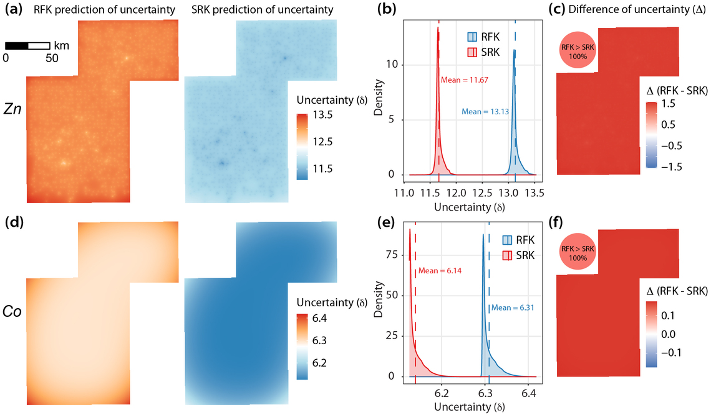
Data and Code Availability
The data and code supporting this study are publicly available through both Figshare and GitHub.
Funding
This work was supported by the National Natural Science Foundation of China (Outstanding Young Scholars Program, Grant No. 42325107) and the Natural Science Foundation of Inner Mongolia Autonomous Region of China (2024QN03070).